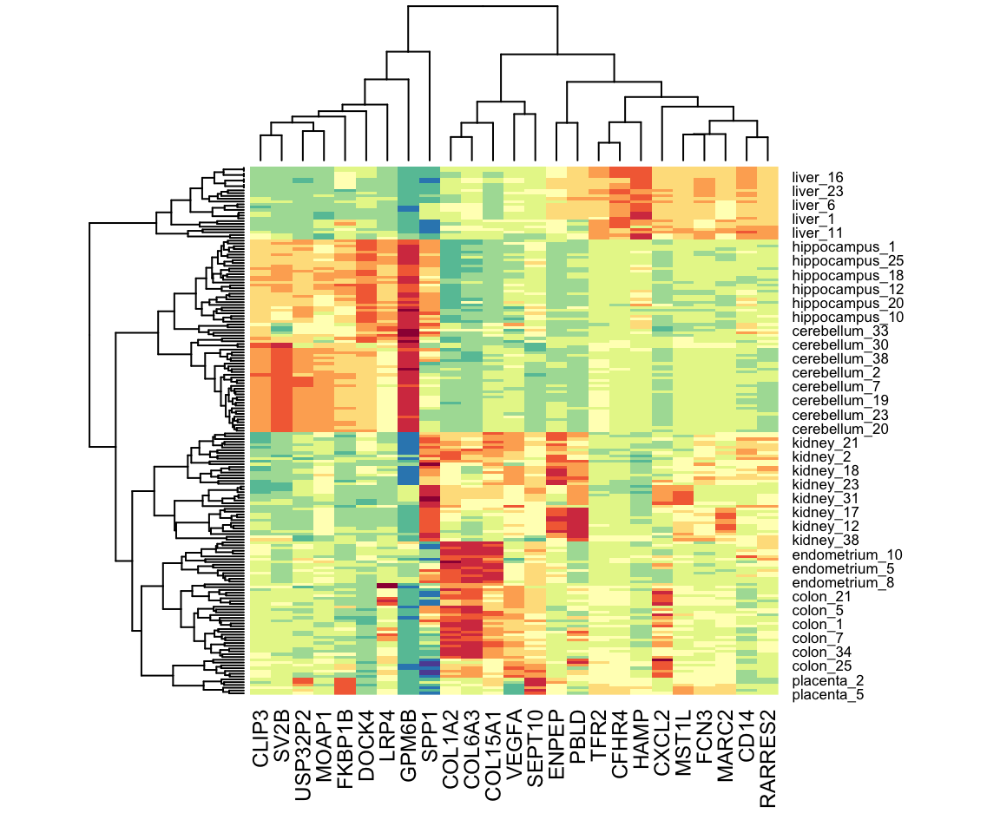

library(tidyverse)
library(dslabs)
mnist_27$train |> ggplot(aes(x_1, x_2, color = y)) + geom_point()
The algorithms we have described up to now are examples of a general approach referred to as supervised machine learning. The name comes from the fact that we use the outcomes in a training set to supervise the creation of our prediction algorithm. There is another subset of machine learning referred to as unsupervised. In this subset we do not necessarily know the outcomes and instead are interested in discovering groups. These algorithms are also referred to as clustering algorithms since predictors are used to define clusters.
In the two examples we have shown here, clustering would not be very useful. In the first example, if we are simply given the heights we will not be able to discover two groups, males and females, because the intersection is large. In the second example, we can see from plotting the predictors that discovering the two digits, two and seven, will be challenging:
library(tidyverse)
library(dslabs)
mnist_27$train |> ggplot(aes(x_1, x_2, color = y)) + geom_point()
However, there are applications in which unsupervised learning can be a powerful technique, in particular as an exploratory tool.
A first step in any clustering algorithm is defining a distance between observations or groups of observations. Then we need to decide how to join observations into clusters. There are many algorithms for doing this. Here we introduce two as examples: hierarchical and k-means.
We will construct a simple example based on movie ratings. Here we quickly construct a matrix x that has ratings for the 50 movies with the most ratings.
top_movies <- movielens |> count(movieId) |> top_n(50, n) |> pull(movieId)
top_users <- filter(movielens, movieId %in% top_movies) |> count(userId) |> top_n(50, n) |> pull(userId)
x <- movielens |> filter(movieId %in% top_movies & userId %in% top_users) |>
select(title, userId, rating) |>
pivot_wider(names_from = userId, values_from = rating)
row_names <- str_remove(x$title, ": Episode") |> str_trunc(20)
x <- x[,-1] |> as.matrix()
x <- sweep(x, 1, rowMeans(x, na.rm = TRUE))
rownames(x) <- row_namesWe want to use these data to find out if there are clusters of movies based on the ratings from 51 movie raters. A first step is to find the distance between each pair of movies using the dist function:
d <- dist(x)With the distance between each pair of movies computed, we need an algorithm to define groups from these. Hierarchical clustering starts by defining each observation as a separate group, then the two closest groups are joined into a group iteratively until there is just one group including all the observations. The hclust function implements this algorithm and it takes a distance as input.
h <- hclust(d)We can see the resulting groups using a dendrogram.
plot(h, cex = 0.65, main = "", xlab = "")
This graph gives us an approximation between the distance between any two movies. To find this distance we find the first location, from top to bottom, where these movies split into two different groups. The height of this location is the distance between these two groups. So, for example, the distance between the three Star Wars movies is 8 or less, while the distance between Raiders of the Lost of Ark and Silence of the Lambs is about 17.
To generate actual groups we can do one of two things: 1) decide on a minimum distance needed for observations to be in the same group or 2) decide on the number of groups you want and then find the minimum distance that achieves this. The function cutree can be applied to the output of hclust to perform either of these two operations and generate groups.
groups <- cutree(h, k = 10)Note that the clustering provides some insights into types of movies. Group 4 appears to be blockbusters:
names(groups)[groups == 4]
#> [1] "Braveheart" "Godfather, The" "Good Will Hunting"And group 9 appears to be nerd movies:
names(groups)[groups == 9]
#> [1] "True Lies" "Fugitive, The" "Groundhog Day"
#> [4] "Men in Black (a.k..."We can change the size of the group by either making k larger or h smaller. We can also explore the data to see if there are clusters of movie raters.
To use the k-means clustering algorithm we have to pre-define \(k\), the number of clusters we want to define. The k-means algorithm is iterative. The first step is to define \(k\) centers. Then each observation is assigned to the cluster with the closest center to that observation. In a second step the centers are redefined using the observation in each cluster: the column means are used to define a centroid. We repeat these two steps until the centers converge.
The kmeans function included in R-base does not handle NAs. For illustrative purposes we will fill out the NAs with 0s. In general, the choice of how to fill in missing data, or if one should do it at all, should be made with care.
The cluster assignments are in the cluster component:
groups <- k$clusterNote that because the first center is chosen at random, the final clusters are random. We impose some stability by repeating the entire function several times and averaging the results. The number of random starting values to use can be assigned through the nstart argument.
k <- kmeans(x_0, centers = 10, nstart = 25)A powerful visualization tool for discovering clusters or patterns in your data is the heatmap. The idea is simple: plot an image of your data matrix with colors used as the visual cue and both the columns and rows ordered according to the results of a clustering algorithm. We will demonstrate this with the tissue_gene_expression dataset. We will scale the rows of the gene expression matrix.
The first step is compute:
Now we can use the results of this clustering to order the rows and columns.
image(x[h_1$order, h_2$order])But there is heatmap function that does it for us:
heatmap(x, col = RColorBrewer::brewer.pal(11, "Spectral"))We do not show the results of the heatmap function because there are too many features for the plot to be useful. We will therefore filter some columns and remake the plots.
If the information about clusters is included in just a few features, including all the features can add enough noise that detecting clusters becomes challenging. One simple approach to try to remove features with no information is to only include those with high variance. In the movie example, a user with low variance in their ratings is not really informative: all the movies seem about the same to them. Here is an example of how we can include only the features with high variance.
library(matrixStats)
sds <- colSds(x, na.rm = TRUE)
o <- order(sds, decreasing = TRUE)[1:25]
heatmap(x[,o], col = RColorBrewer::brewer.pal(11, "Spectral"))
1. Load the tissue_gene_expression dataset. Remove the row means and compute the distance between each observation. Store the result in d.
2. Make a hierarchical clustering plot and add the tissue types as labels.
3. Run a k-means clustering on the data with \(K=7\). Make a table comparing the identified clusters to the actual tissue types. Run the algorithm several times to see how the answer changes.
4. Select the 50 most variable genes. Make sure the observations show up in the columns, that the predictors are centered, and add a color bar to show the different tissue types. Hint: use the ColSideColors argument to assign colors. Also, use col = RColorBrewer::brewer.pal(11, "RdBu") for a better use of colors.